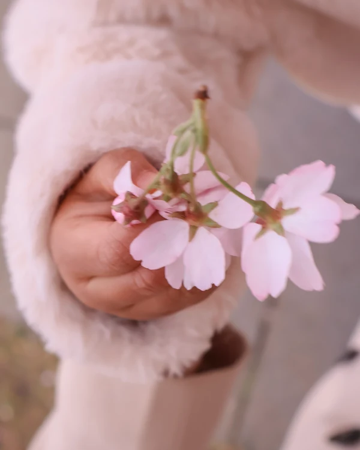
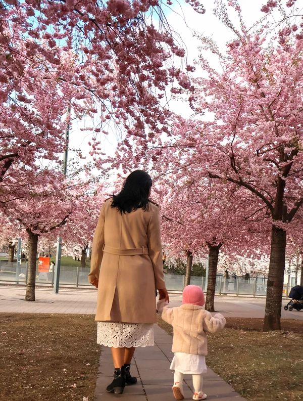
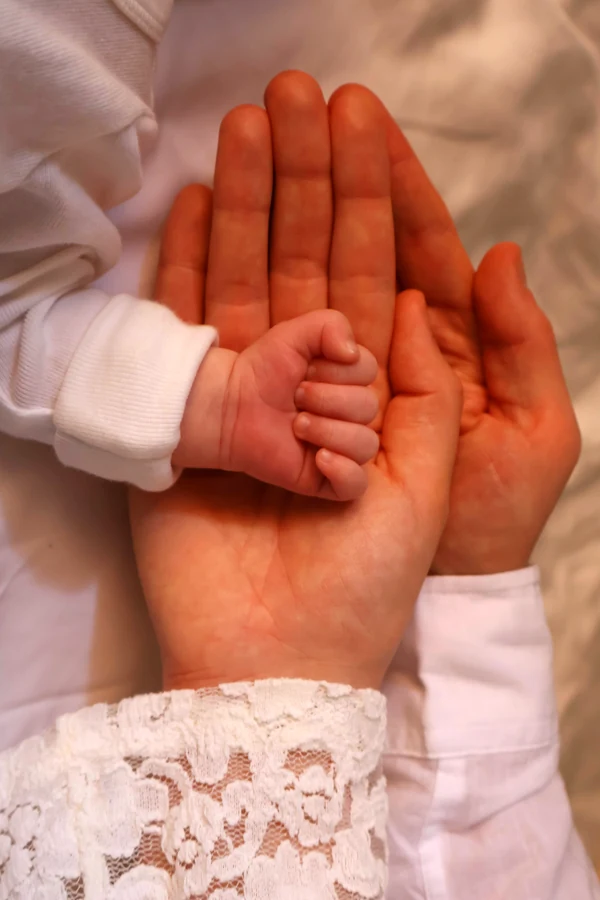

About me
A lawyer’s precision.
A storyteller’s eye.

I design interfaces that are clear, calm and easy to trust.
I’m a UX/UI designer studying Digital Creative at Hyper Island in Stockholm. I’m happiest in shaping research and messy information into screens that feel effortless to use.
01My story
From contracts
to interfaces.
I started in law: a bachelor’s and a master’s in international law, then six years in legal and compliance at SGS. I managed B2B contracts from draft to signature and turned regulations into training people could actually use.
I read regulations for six years. Now I design products that meet them.
Writing ran alongside it. As a student, I wrote SMS copy for mobile service packages at SabaIdea, keeping every message short and clear within strict character limits — the job that first pulled me toward this field. Later, as a freelance copywriter for Faramohtava, I wrote SEO articles that helped brands get found. Along the way, I translated three books from English to Persian.
Design is where that job became my craft. At Hyper Island I work on client briefs with real constraints, from interviews and journey maps to usability testing and visual UI.
2009 – 2015
Law
LL.B and LL.M in International Law, Tehran.
2015 – 2019
Words
SabaIdea, Faramohtava and three translated books.
2015 – 2021
Compliance
Legal Coordinator → Senior Coordinator, SGS.
2024 – 2027
Design
Digital Creative, Hyper Island, Stockholm.
02How I work
What I bring from
before design.
Precision
Years of contracts taught me to read the fine print. I notice the rules, edge cases and details that quietly shape an experience.
Clarity
From SMS character limits to legal language, I’ve learned to say more with less. Plain words and clear structure come first.
Storytelling
I translate between people, research and design — and shape insights into stories a team can act on.
Colour & character
The picture books I grew up with gave me a colour-rich, slightly whimsical eye. I use it with restraint to give interfaces personality.
03Off-screen
These days, I tell
people’s stories
through my camera.
I photograph families and the small, unposed moments between them — light, hands, a glance. The camera taught me to notice what people don’t say, and that’s the same attention I bring to research.
Photography
Small moments
Families, light and the quiet details in between. Photographed in Stockholm.
Every family has a story. I look for it in the small things.



04Details
Languages
- English — fluent
- Swedish — intermediate
- Persian — native
Toolkit
- Figma
- User research & interviews
- Usability testing
- Journey mapping & personas
- Wireframing & prototyping
- HTML & CSS (basic)
- AI: Claude, ChatGPT, Magnific
Looking for
Especially drawn to products where complex information needs to feel clear and human.